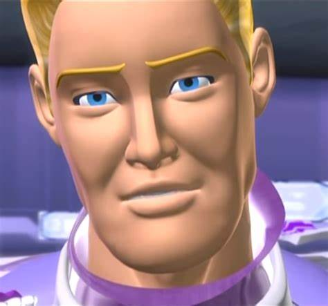

Major Wheeler es el padre de Vert Wheeler, MW (Major Wheeler) es el lider de los Silencerz y su equipo de investigadores. Su motivo para unirse a ellos o que es lo que quieren es desconocido. MW acaba de encontrarse con su hijo Vert en la base de los Silencerz. Que es lo que quiere hacer con el todavia es desconocido.
1 / 3

Major Wheeler sin el casco de los Silencerz
2 / 3
Major Wheeler con el mono de los Silencerz
3 / 3

Iridium, el coche de Major Wheeler en la base de los Silencerz
Continuar